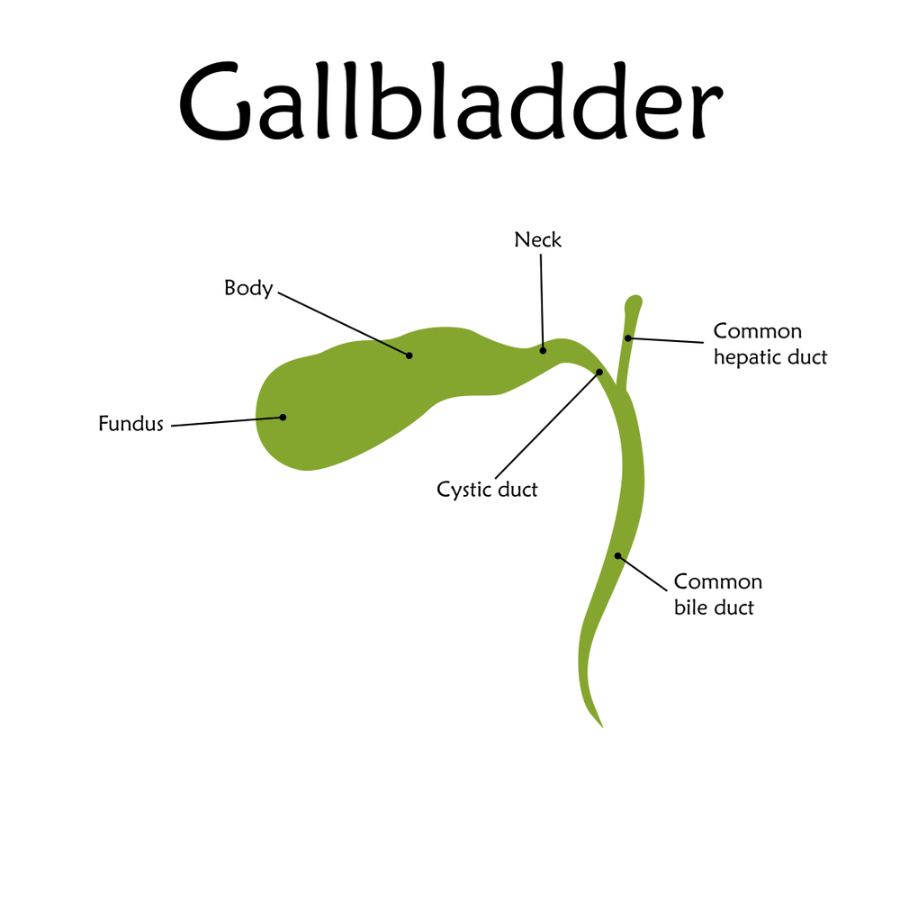

When someone hears the word surgery, a few things immediately flash in their mind — long hours under anesthesia, a big hospital stay, and weeks of painful recovery. But in the world of modern medicine, especially with robotic techniques, that picture is changing fast.
One of the most commonly performed robotic procedures today is gallbladder removal, also called cholecystectomy. Thanks to robotic technology, what used to take hours and leave behind large scars can now be done in under an hour with minimal cuts, faster healing, and barely any hospital stay.
This blog will walk you through everything you need to know about how long is robotic gallbladder surgery— not just how long it takes inside the OT, but how long the entire experience lasts, from preparation to recovery.
What is Robotic Gallbladder Surgery?
Robotic gallbladder surgery is an advanced, minimally invasive procedure in which the surgeon removes your gallbladder using robotic arms controlled by a high-tech console. It’s not the robot thinking — it’s your surgeon, who sits a few feet away and uses tiny hand movements to control robotic instruments inside your body.

Here’s how it works:
- Small cuts (usually 4) are made on your abdomen.
- A tiny camera is inserted through one of the incisions, sending high-definition 3D images to a monitor.
- The surgeon, seated at a console, controls robotic instruments that mimic wrist movements, with even greater precision and flexibility.
- The gallbladder is separated from surrounding structures and removed through one of the incisions.
How Long is Robotic Gallbladder Surgery?
Generally, robotic gallbladder surgery takes about 45 minutes to 1.5 hours. The exact time depends on several factors:
- Condition of the Gallbladder: If your gallbladder is inflamed, infected, or full of stones, it may take more time to remove carefully without damaging nearby organs.
- Surgeon’s Experience: An experienced Robotic Surgeon in Delhi can complete the surgery more efficiently, even in complicated cases, thanks to their familiarity with robotic controls and the patient’s anatomy.
- Obesity or Prior Abdominal Surgeries: In overweight patients or those who’ve had previous operations, it may take longer to navigate internal organs and scar tissue.
- Anesthesia and Setup Time: The robot must be docked, surgical ports must be inserted, and the patient must be fully prepped — this adds around 20–30 minutes before and after the actual cutting begins.
- Unexpected Findings During Surgery: Occasionally, surgeons discover issues (like a bile duct anomaly or adhesions) that require extra care, and thus, more time.
Still, even at the higher end, the procedure is faster than traditional open surgery, which may take over 2–3 hours and requires a larger incision.
So when someone asks, “How long is robotic gallbladder surgery?”, a more accurate reply would be: “The surgery itself takes around an hour, but the full operating room time may be up to 2 hours, including preparation and recovery from anesthesia.”
How long is the Hospital stay after Robotic Surgery?
Gone are the days when gallbladder removal meant a week-long stay in a hospital bed with a dressing as wide as a belt. With robotic technology, most patients go home the same day or within 24 hours after surgery.
Let’s break it down:
- Same-Day Discharge (Daycare Surgery): If you’re medically fit, have no complications, and your pain is controlled, doctors may discharge you a few hours after surgery. This is becoming common in many advanced centers offering Gallbladder Surgery in Delhi.
- One-Night Hospital Stay: Some patients are kept under observation overnight, especially older adults, diabetics, or those who live far from the hospital.
- More than 1 Night: Rare, and usually only if there are complications like bleeding, bile leak, or unexpected findings during surgery.
Before discharge, your doctor checks for:
- Stable blood pressure and oxygen levels
- Ability to walk and pass urine
- No excessive pain or vomiting
- Tolerating light food or liquids
In comparison, traditional open surgery often needs a 3–5 day hospital stay. So yes, robotic gallbladder surgery truly shortens your stay — and speeds up your return to normal life.
Recovery Time after Robotic Gallbladder Surgery
When you hear the word “surgery,” most people immediately imagine a long, slow recovery — lots of bed rest, tight bandages, and painkillers on repeat. But here’s the beauty of robotic gallbladder surgery: the recovery is much faster and smoother than traditional methods.
So, how long does it take to fully recover?
Most patients feel 70–80% recovered within 1 week, and completely back to normal within 2 to 3 weeks.
Here’s a general timeline of what recovery looks like:
- Day 1–2: Mild pain or discomfort around the incision sites. Walking is encouraged, but strenuous movement is avoided. You can usually drink liquids and eat light food.
- Days 3–5: Pain reduces significantly. Bowel movements may return to normal. You can resume basic household activities slowly.
- Days 7–10: Stitches (if any) are removed, and most people feel confident walking, sitting, and eating normally. Pain medication is rarely needed beyond this point.
- Weeks 2–3: You’re likely fully mobile, doing most of your daily tasks independently, including light office work or driving (after medical approval).
Compare this to open gallbladder surgery, where recovery takes 6–8 weeks, and the difference is clear.
Choosing Dr. Atul Peters not only makes the surgery safer but also often ensures a faster recovery timeline, as the surgical technique involves minimal tissue damage and less inflammation.
How soon Can You Resume Daily Activities and Work?
You’ve made it through surgery, you’re walking around again, and your appetite is returning. But when can you get back to life, work, exercise, travel, or just picking up the grocery bag?
Let’s answer this honestly, without the sugarcoating.
Activities You Can Resume Early (within 3–5 days):
- Walking indoors or in your building
- Climbing stairs slowly
- Reading, working on a laptop, and light cooking
- Taking a shower (after dressings are removed)
Activities You Can Resume in 1–2 Weeks:
- Driving a car (if you’re not on painkillers and can move comfortably)
- Returning to desk jobs or work-from-home setups
- Going for light walks outdoors
Activities That Need to Wait (at least 3–4 weeks):
- Lifting heavy weights (gym or groceries)
- Bending or stretching exercises
- Travel involving long hours
- Any high-intensity physical activity
Your doctor will guide you based on how your healing is progressing. But most people who undergo Gallbladder Surgery in Delhi via robotic technique can return to office work in about 7–10 days, much faster than with open surgery.
Why Robotic Gallbladder Surgery is Faster than Traditional Surgery
If you’re wondering why robotic surgery is so efficient compared to open or even standard laparoscopic methods, the answer lies in precision, control, and minimal trauma.
Here’s how robotic technology saves time and speeds up healing:
- Smaller Incisions: Robotic instruments require tiny cuts (often 5–10 mm), unlike open surgery, which needs a large abdominal incision. Smaller cuts = less pain, less healing time.
- High-Definition 3D Imaging: The robotic system provides magnified 3D visuals. Surgeons can see the anatomy more clearly, reducing the risk of injury and shortening the time taken to identify and remove the gallbladder.
- Tremor-Free, Precise Movements: Even the steadiest human hand has minor tremors. Robots filter this out completely, enabling highly controlled, refined movements during the procedure.
- Minimal Bleeding: The fine movements of robotic tools cause less damage to surrounding tissues and blood vessels, which means less blood loss and quicker post-op recovery.
- Shorter Hospital Stay and Recovery: Because of all the above, robotic surgery patients often return home the same day and recover in a fraction of the time it takes with open surgery.
In short, robotic gallbladder surgery is not just about being “fancy” — it’s clinically superior in many ways.
Robotic Gallbladder Surgery by Dr. Atul Peters!
Contact Now!
Book Your Appointment
Conclusion
Gone are the days when surgery meant long hospital stays, large scars, and weeks of painful recovery. With robotic gallbladder surgery, patients today are choosing precision, speed, and comfort.
From the time in the OT to the hours spent in the hospital, everything about robotic surgery is designed to be efficient. In the hands of an expert Robotic Surgeon in Delhi, what was once considered a major operation can now be a minimally invasive, low-stress procedure with excellent results.
So if you’ve been diagnosed with gallstones or chronic gallbladder issues, and you’re wondering about how long robotic gallbladder surgery takes, the answer is simple: not long at all — but the benefits last a lifetime.
Frequently Asked Questions
Q1. How long does robotic gallbladder surgery take inside the OT?
Usually 45 minutes to 1.5 hours, depending on the complexity of the case.
Q2. How long do I have to stay in the hospital?
Most patients are discharged the same day or within 24 hours.
Q3. When can I return to work?
If you have a desk job, most people return to work within 7–10 days. For physical jobs, 3–4 weeks.
Q4. Is robotic surgery better than laparoscopic surgery?
Yes, in many cases. It offers better precision, faster healing, and less blood loss.
Q5. Does robotic surgery cost more?
It can be slightly more expensive, but many believe the faster recovery and fewer complications make it worth the cost.
Recommended Further Reading
Have Personal Health Questions?
Consult with Dr. Atul Peters and our expert multidisciplinary team at Max Smart Super Speciality Hospital, Saket, New Delhi.
Book Your Consultation